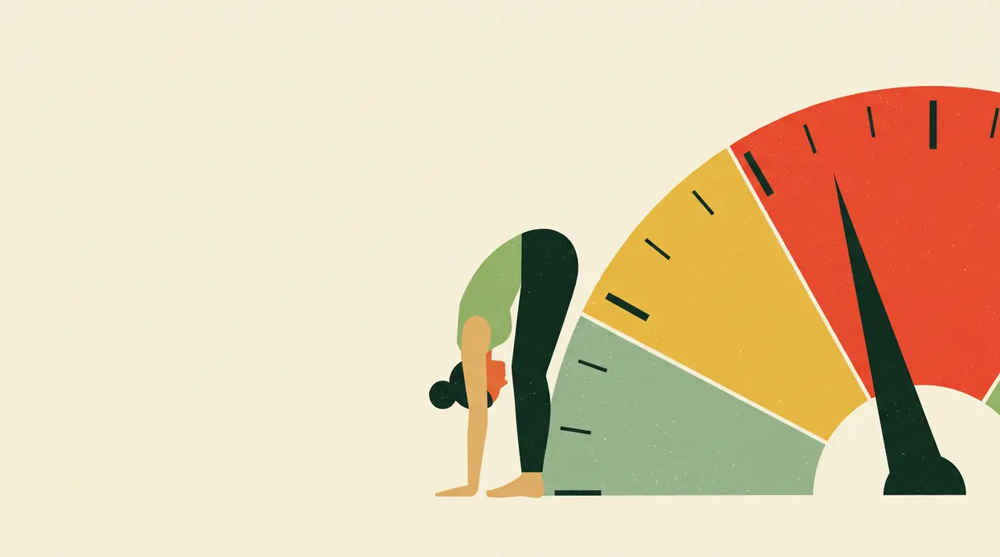

Bedarf-o-Meter
Bedarf is German for need. This meter guesses how much stretch you need right now.
8%
Low Bedarf
Freshly oiled hinge. Barely any Bedarf. Stretch anyway and show off a little.
60 seconds, done.
Your Bedarf was , which makes you . It is lower now, we hope. The meter cannot check.